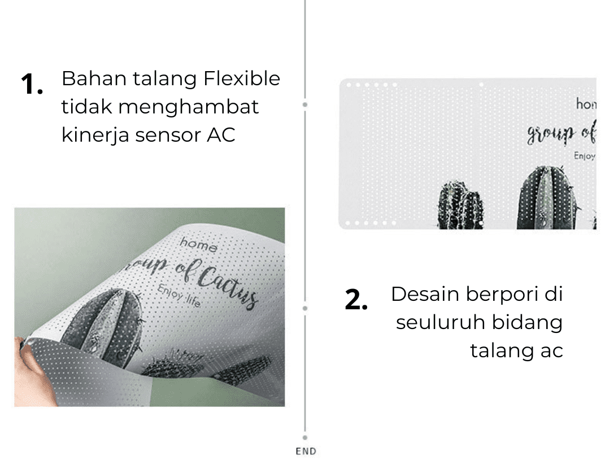

<section class="info__section">
    <div class="container">
        <div class="info__section-wrapper">
            <h2 class="info__title">
                AC REFLEKTOR FLEXIBLE
            </h2>
            <p class="info__text">
                <span class="bold">AC Reflector Flexible</span> dapat melindungi tubuh dari semburan angin AC secara langsung, terutama yang duduk atau tidur di bawah AC.
            </p>
            <p class="info__text">
                <span class="bold">Ac Reflektor Flexible</span> dapat menahan semburan Angin AC dengan sempurna, dengan demikian udara dingin yang ditiupkan oleh blower AC akan memantul terlebih dahulu sebelum mengenai tubuh.
            </p>
            
            <p class="info__text">
                <span class="bold">AC Reflector Flexible</span> ini di desain untuk membuat angin AC lebih menyebar dan suhu dingin jadi cepat menyebar ke seuluruh ruangan, dengan desain berpori AC REFLEKTOR ini tidak menghalangi kinerja sensor AC.
            </p>
            <p class="info__text">
                <span class="bold">Ac Reflektor Flexible</span> ini sangat flexible mudah di lipat dan di tekuk-tekuk, sesuaikan seuai kebutuhan dan keperluan.
            </p>
            
            <p class="info__text info__text-center">
                Jika ACmu sudah dilengkapi dengan reflector AC, kamu dapat dengan mudah beraktifitas di ruangan ber AC bahkan untuk si kecil tidur di kamar ber AC pun tanpa takut terkena dampak bahanyanya angin AC
            </p>
            
            <h3 class="info__title-small">
                Lalu kenapa harus pakai AC Reflektor Flexible kan sudah ada Wing dari AC itu sendiri?
            </h3>
            <p class="info__text">
                Wing AC tidak mampu sepenuhnya menghalangi Angin dari blower unit AC, karena bentuk wing AC sendiri yang kecil dan tekenan blower AC terkadang kencang, Jika dari jarak dekat memang Angin AC tidak akan terasa ketika Wing AC di fungsikan tapi jika pemasangan jauh dengan kita makan angin blower AC akan begitu terasa.
            </p>
            
            
            <h3 class="info__title-middle margin__top">
                Detail Product :
            </h3>
            
            
            
        </div>
    </div>
</section>